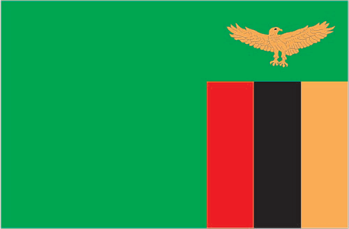
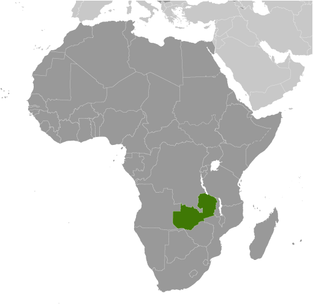
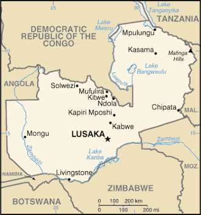

Africa :: ZAMBIA
Introduction :: ZAMBIA
-
The territory of Northern Rhodesia was administered by the former British South Africa Company from 1891 until it was taken over by the UK in 1923. During the 1920s and 1930s, advances in mining spurred development and immigration. The name was changed to Zambia upon independence in 1964. In the 1980s and 1990s, declining copper prices, economic mismanagement, and a prolonged drought hurt the economy. Elections in 1991 brought an end to one-party rule and propelled the Movement for Multiparty Democracy (MMD) to government. The subsequent vote in 1996, however, saw increasing harassment of opposition parties and abuse of state media and other resources. The election in 2001 was marked by administrative problems, with three parties filing a legal petition challenging the election of ruling party candidate Levy MWANAWASA. MWANAWASA was reelected in 2006 in an election that was deemed free and fair. Upon his death in August 2008, he was succeeded by his vice president, Rupiah BANDA, who won a special presidential byelection later that year. The MMD and BANDA lost to the Patriotic Front (PF) and Michael SATA in the 2011 general elections. SATA, however, presided over a period of haphazard economic management and attempted to silence opposition to PF policies. SATA died in October 2014 and was succeeded by his vice president, Guy SCOTT, who served as interim president until January 2015, when Edgar LUNGU won the presidential byelection and completed SATA's term. LUNGU then won a full term in August 2016 presidential elections.
Geography :: ZAMBIA
-
Southern Africa, east of Angola, south of the Democratic Republic of the Congo15 00 S, 30 00 EAfricatotal: 752,618 sq kmland: 743,398 sq kmwater: 9,220 sq kmcountry comparison to the world: 40almost five times the size of Georgia; slightly larger than Texastotal: 6,043.15 kmborder countries (8): Angola 1,065 km, Botswana 0.15 km, Democratic Republic of the Congo 2,332 km, Malawi 847 km, Mozambique 439 km, Namibia 244 km, Tanzania 353 km, Zimbabwe 763 km0 km (landlocked)none (landlocked)tropical; modified by altitude; rainy season (October to April)mostly high plateau with some hills and mountainsmean elevation: 1,138 melevation extremes: lowest point: Zambezi river 329 mhighest point: unnamed elevation in Mafinga Hills 2,301 mcopper, cobalt, zinc, lead, coal, emeralds, gold, silver, uranium, hydropoweragricultural land: 31.7%arable land 4.8%; permanent crops 0%; permanent pasture 26.9%forest: 66.3%other: 2% (2011 est.)1,560 sq km (2012)one of the highest levels of urbanization in Africa; high density in the central area, particularly around the cities of Lusaka, Ndola, Kitwe, and Mufuliraperiodic drought; tropical storms (November to April)air pollution and resulting acid rain in the mineral extraction and refining region; chemical runoff into watersheds; poaching seriously threatens rhinoceros, elephant, antelope, and large cat populations; deforestation; soil erosion; desertification; lack of adequate water treatment presents human health risksparty to: Biodiversity, Climate Change, Climate Change-Kyoto Protocol, Desertification, Endangered Species, Hazardous Wastes, Law of the Sea, Ozone Layer Protection, Wetlandssigned, but not ratified: none of the selected agreementslandlocked; the Zambezi forms a natural riverine boundary with Zimbabwe; Lake Kariba on the Zambia-Zimbabwe border forms the world's largest reservoir by volume (180 cu km; 43 cu mi)
People and Society :: ZAMBIA
-
15.972 millionnote: estimates for this country explicitly take into account the effects of excess mortality due to AIDS; this can result in lower life expectancy, higher infant mortality, higher death rates, lower population growth rates, and changes in the distribution of population by age and sex than would otherwise be expected (July 2017 est.)country comparison to the world: 69noun: Zambian(s)adjective: ZambianBemba 21%, Tonga 13.6%, Chewa 7.4%, Lozi 5.7%, Nsenga 5.3%, Tumbuka 4.4%, Ngoni 4%, Lala 3.1%, Kaonde 2.9%, Namwanga 2.8%, Lunda (north Western) 2.6%, Mambwe 2.5%, Luvale 2.2%, Lamba 2.1%, Ushi 1.9%, Lenje 1.6%, Bisa 1.6%, Mbunda 1.2%, other 13.8%, unspecified 0.4% (2010 est.)Bembe 33.4%, Nyanja 14.7%, Tonga 11.4%, Lozi 5.5%, Chewa 4.5%, Nsenga 2.9%, Tumbuka 2.5%, Lunda (North Western) 1.9%, Kaonde 1.8%, Lala 1.8%, Lamba 1.8%, English (official) 1.7%, Luvale 1.5%, Mambwe 1.3%, Namwanga 1.2%, Lenje 1.1%, Bisa 1%, other 9.7%, unspecified 0.2%note: Zambia is said to have over 70 languages, although many of these may be considered dialects; all of Zambia's major languages are members of the Bantu family (2010 est.)Protestant 75.3%, Roman Catholic 20.2%, other 2.7% (includes Muslim Buddhist, Hindu, and Baha'i), none 1.8% (2010 est.)Zambia’s poor, youthful population consists primarily of Bantu-speaking people representing nearly 70 different ethnicities. Zambia’s high fertility rate continues to drive rapid population growth, averaging almost 3 percent annually between 2000 and 2010. The country’s total fertility rate has fallen by less than 1.5 children per woman during the last 30 years and still averages among the world’s highest, almost 6 children per woman, largely because of the country’s lack of access to family planning services, education for girls, and employment for women. Zambia also exhibits wide fertility disparities based on rural or urban location, education, and income. Poor, uneducated women from rural areas are more likely to marry young, to give birth early, and to have more children, viewing children as a sign of prestige and recognizing that not all of their children will live to adulthood. HIV/AIDS is prevalent in Zambia and contributes to its low life expectancy.Zambian emigration is low compared to many other African countries and is comprised predominantly of the well-educated. The small amount of brain drain, however, has a major impact in Zambia because of its limited human capital and lack of educational infrastructure for developing skilled professionals in key fields. For example, Zambia has few schools for training doctors, nurses, and other health care workers. Its spending on education is low compared to other sub-Saharan countries.0-14 years: 46.03% (male 3,693,255/female 3,657,890)15-24 years: 20% (male 1,595,628/female 1,598,065)25-54 years: 28.72% (male 2,310,961/female 2,276,018)55-64 years: 2.93% (male 217,954/female 250,134)65 years and over: 2.33% (male 162,605/female 209,490) (2017 est.)total dependency ratio: 91.9youth dependency ratio: 87.1elderly dependency ratio: 4.8potential support ratio: 20.8 (2015 est.)total: 16.8 yearsmale: 16.6 yearsfemale: 16.9 years (2017 est.)country comparison to the world: 2252.93% (2017 est.)country comparison to the world: 1041.5 births/1,000 population (2017 est.)country comparison to the world: 512.2 deaths/1,000 population (2017 est.)country comparison to the world: 200 migrant(s)/1,000 population (2017 est.)country comparison to the world: 72one of the highest levels of urbanization in Africa; high density in the central area, particularly around the cities of Lusaka, Ndola, Kitwe, and Mufuliraurban population: 41.8% of total population (2017)rate of urbanization: 4.35% annual rate of change (2015-20 est.)LUSAKA (capital) 2.179 million (2015)at birth: 1.03 male(s)/female0-14 years: 1.01 male(s)/female15-24 years: 1 male(s)/female25-54 years: 1.02 male(s)/female55-64 years: 0.88 male(s)/female65 years and over: 0.76 male(s)/femaletotal population: 1 male(s)/female (2016 est.)19.2 yearsnote: median age at first birth among women 25-29 (2013/14 est.)224 deaths/100,000 live births (2015 est.)country comparison to the world: 48total: 61.1 deaths/1,000 live birthsmale: 66.4 deaths/1,000 live birthsfemale: 55.6 deaths/1,000 live births (2017 est.)country comparison to the world: 16total population: 52.7 yearsmale: 51.1 yearsfemale: 54.4 years (2017 est.)country comparison to the world: 2195.63 children born/woman (2017 est.)country comparison to the world: 849% (2013/14)5% of GDP (2014)country comparison to the world: 1410.16 physicians/1,000 population (2012)2 beds/1,000 population (2010)improved:urban: 85.6% of populationrural: 51.3% of populationtotal: 65.4% of populationunimproved:urban: 14.4% of populationrural: 48.7% of populationtotal: 34.6% of population (2015 est.)improved:urban: 55.6% of populationrural: 35.7% of populationtotal: 43.9% of populationunimproved:urban: 44.4% of populationrural: 64.3% of populationtotal: 56.1% of population (2015 est.)12.4% (2016 est.)country comparison to the world: 71.2 million (2016 est.)country comparison to the world: 921,000 (2016 est.)country comparison to the world: 13degree of risk: very highfood or waterborne diseases: bacterial and protozoal diarrhea, hepatitis A, and typhoid fevervectorborne diseases: malaria and dengue feverwater contact disease: schistosomiasisanimal contact disease: rabies (2016)8.1% (2016)country comparison to the world: 15514.8% (2013)country comparison to the world: 491.1% of GDP (2008)country comparison to the world: 170definition: age 15 and over can read and write Englishtotal population: 63.4%male: 70.9%female: 56% (2015 est.)total: 15.2%male: 14.6%female: 15.8% (2012 est.)country comparison to the world: 42
Government :: ZAMBIA
-
conventional long form: Republic of Zambiaconventional short form: Zambiaformer: Northern Rhodesiaetymology: name derived from the Zambezi River, which flows through the western part of the country and forms its southern border with neighboring Zimbabwepresidential republicname: Lusaka; note - a proposal to build a new capital city in Ngabwe was announced in May 2017geographic coordinates: 15 25 S, 28 17 Etime difference: UTC+2 (7 hours ahead of Washington, DC, during Standard Time)10 provinces; Central, Copperbelt, Eastern, Luapula, Lusaka, Muchinga, Northern, North-Western, Southern, Western24 October 1964 (from the UK)Independence Day, 24 October (1964)history: several previous; latest adopted 24 August 1991, promulgated 30 August 1991amendments: proposed by the National Assembly; passage requires two-thirds majority vote by the Assembly in two separate readings at least 30 days apart; passage of amendments affecting fundamental rights and freedoms requires approval by at least one-half of votes cast in a referendum prior to consideration and voting by the Assembly; amended 1996, 2015, last in 2016 (2017)mixed legal system of English common law and customary lawhas not submitted an ICJ jurisdiction declaration; accepts ICCt jurisdictioncitizenship by birth: only if at least one parent is a citizen of Zambiacitizenship by descent: yes, if at least one parent was a citizen of Zambiadual citizenship recognized: yesresidency requirement for naturalization: 5 years for those with an ancestor who was a citizen of Zambia, otherwise 10 years residency is required18 years of age; universalchief of state: President Edgar LUNGU (since 25 January 2015); Vice President Inonge WINA (since 26 January 2015); note - the president is both chief of state and head of governmenthead of government: President Edgar LUNGU (since 25 January 2015); Vice President Inonge WINA (since 26 January 2015)cabinet: Cabinet appointed by president from among members of the National Assemblyelections/appointments: president directly elected by absolute majority popular vote in 2 rounds if needed for a 5-year term (eligible for a second term); last held on 11 August 2016 (next to be held in 2021)election results: Edgar LUNGU reelected president; percent of vote - Edgar LUNGU (PF) 50.4%, Hakainde HICHILEMA (UPND) 47.6%, other 2.0%description: unicameral National Assembly (164 seats; 156 members directly elected in single-seat constituencies by simple majority vote, and 8 appointed by the president; members serve 5-year terms); note - 6 additional electoral seats were added for the 11 August 2016 election, up from 150 electoral seats in the 2011 electionelections: last held on 11 August 2016 (next to be held in 2021)election results: percent of vote by party - PF 42%, UPND 41.7%, MMD 2.7%, FDD 2.2%, other 1.9%,independent 9.5%; seats by party - PF 80, UPND 58, MMD 3, FDD 1, independent 14highest court(s): Supreme Court (consists of the chief justice and deputy chief justices, and at least 11 judges); Constitutional Court (consists of the court president, vice-president, and 11 judges); note - the Constitutional Court began operation in June 2016judge selection and term of office: Supreme Court and Constitutional Court judges appointed by the president upon the advice of the 9-member Judicial Service Commission headed by the chief justice, and ratified by the National Assembly; judges normally serve until age 65subordinate courts: Court of Appeal; High Court; Industrial Relations Court; subordinate courts 3 levels, based on upper limit of money involved); Small Claims Court; local courts (2 grades, based on upper limit of money involved)Alliance for Democracy and Development or ADD [Charles MILUPI]Forum for Democracy and Development or FDD [Edith NAWAKWI]Movement for Multiparty Democracy or MMD [Nevers MUMBA]Patriotic Front or PF [Edgar LUNGU]United Party for National Development or UPND [Hakainde HICHILEMA]Congress of Trade Unions or ZCTU; Federation of Free Trade Unions in Zambiaother: other labor and trade unionsACP, AfDB, AU, C, COMESA, EITI (compliant country), FAO, G-77, IAEA, IBRD, ICAO, ICCt, ICRM, IDA, IFAD, IFC, IFRCS, ILO, IMF, Interpol, IOC, IOM, IPU, ISO (correspondent), ITSO, ITU, ITUC (NGOs), MIGA, MONUSCO, NAM, OPCW, PCA, SADC, UN, UNAMID, UNCTAD, UNESCO, UNHCR, UNIDO, UNISFA, UNMIL, UNMISS, UNOCI, UNWTO, UPU, WCO, WHO, WIPO, WMO, WTOchief of mission: Ambassador (vacant); Charge d'Affaires Joseph CHILAIZYA (since 19 September 2016chancery: 2419 Massachusetts Avenue NW, Washington, DC 20008telephone: [1] (202) 265-9717 through 9719FAX: [1] (202) 332-0826chief of mission: Ambassador Eric T. SCHULTZ (since 12 December 2014)embassy: Eastern end of Kabulonga Road, Ibex Hill, Lusakamailing address: P. O. Box 320065, Lusakatelephone: [260] (211) 357-000FAX: [260] ) (211) 357-224green field with a panel of three vertical bands of red (hoist side), black, and orange below a soaring orange eagle, on the outer edge of the flag; green stands for the country's natural resources and vegetation, red symbolizes the struggle for freedom, black the people of Zambia, and orange the country's mineral wealth; the eagle represents the people's ability to rise above the nation's problemsAfrican fish eagle; national colors: green, red, black, orangename: "Lumbanyeni Zambia" (Stand and Sing of Zambia, Proud and Free)lyrics/music: multiple/Enoch Mankayi SONTONGAnote: adopted 1964; the melody, from the popular song "God Bless Africa," is the same as that of Tanzania but with different lyrics; the melody is also incorporated into South Africa's anthem
Economy :: ZAMBIA
-
Zambia had one of the world’s fastest growing economies for the ten years up to 2014, with real GDP growth averaging roughly 6.7% per annum, though growth slowed in 2015 and 2016 to just under 3%, due to falling copper prices, reduced power generation, and depreciation of the kwacha. Zambia’s lack of economic diversification and dependency on copper as its sole major export makes it vulnerable to fluctuations in the world commodities market and prices turned downward in 2015 due to declining demand from China; Zambia was overtaken by the Democratic Republic of Congo as Africa’s largest copper producer.Despite recent strong economic growth and its status as a lower middle-income country, widespread and extreme rural poverty and high unemployment levels remain significant problems, made worse by a high birth rate, a relatively high HIV/AIDS burden, and by market-distorting agricultural and energy policies. Zambia has raised $7 billion from international investors by issuing separate sovereign bonds in 2012, 2014, and 2015, significantly increasing the country’s public debt burden to 56% of GDP; the government plans to refinance $2.8 billion worth of Eurobonds in 2017 to cut debt servicing costs.Poor management of water resources has also contributed to a power generation shortage, which has hampered industrial productivity and contributed to an increase in year-on-year inflation to more than 20% in 2016. Zambia’s currency, the kwacha, also depreciated sharply against the dollar through 2015 and 2016, leading the central bank to restrict lending. Rampant spending in recent years has increased the fiscal deficit—over 8% in 2015—and may encourage the government to seek external financing from the IMF to fund the shortfall.$65.13 billion (2016 est.)$62.19 billion (2015 est.)$59.77 billion (2014 est.)note: data are in 2016 dollarscountry comparison to the world: 101$21.01 billion (2016 est.)3.4% (2016 est.)2.9% (2015 est.)4.7% (2014 est.)country comparison to the world: 96$3,900 (2016 est.)$3,900 (2015 est.)$3,900 (2014 est.)note: data are in 2016 dollarscountry comparison to the world: 17737.3% of GDP (2016 est.)38.9% of GDP (2015 est.)36.1% of GDP (2014 est.)country comparison to the world: 63household consumption: 54%government consumption: 21.9%investment in fixed capital: 26.9%investment in inventories: 0.1%exports of goods and services: 45.5%imports of goods and services: -48.4% (2016 est.)agriculture: 5.4%industry: 35.7%services: 60% (2016 est.)corn, sorghum, rice, peanuts, sunflower seeds, vegetables, flowers, tobacco, cotton, sugarcane, cassava (manioc, tapioca), coffee; cattle, goats, pigs, poultry, milk, eggs, hidescopper mining and processing, emerald mining, construction, foodstuffs, beverages, chemicals, textiles, fertilizer, horticulture6.4% (2016 est.)country comparison to the world: 316.69 million (2016 est.)country comparison to the world: 69agriculture: 85%industry: 6%services: 9% (2004)15% (2008 est.)50% (2000 est.)country comparison to the world: 17260.5% (2010 est.)lowest 10%: 1.5%highest 10%: 47.4% (2010)57.5 (2013)50.8 (2004)country comparison to the world: 8revenues: $3.654 billionexpenditures: $5.751 billion (2016 est.)17.1% of GDP (2016 est.)country comparison to the world: 173-9.8% of GDP (2016 est.)country comparison to the world: 19958.6% of GDP (2016 est.)60.2% of GDP (2015 est.)country comparison to the world: 76calendar year17.9% (2016 est.)10.1% (2015 est.)country comparison to the world: 2189.1% (31 December 2012)19% (31 December 2011)country comparison to the world: 2815.5% (31 December 2016 est.)13.25% (31 December 2015 est.)country comparison to the world: 39$1.582 billion (31 December 2016 est.)$1.288 billion (31 December 2015 est.)country comparison to the world: 137$4.145 billion (31 December 2016 est.)$3.74 billion (31 December 2015 est.)country comparison to the world: 133$4.167 billion (31 December 2016 est.)$3.682 billion (31 December 2015 est.)country comparison to the world: 130$3.004 billion (31 December 2012 est.)$4.009 billion (31 December 2011 est.)$2.817 billion (31 December 2010 est.)country comparison to the world: 95$-934 million (2016 est.)$-767.5 million (2015 est.)country comparison to the world: 119$6.514 billion (2016 est.)$7.362 billion (2015 est.)country comparison to the world: 101copper/cobalt, cobalt, electricity; tobacco, flowers, cottonSwitzerland 39.4%, China 18%, Democratic Republic of the Congo 6.7%, South Africa 6.4%, UAE 6%, Singapore 5.6% (2016)$6.539 billion (2016 est.)$7.436 billion (2015 est.)country comparison to the world: 110machinery, transportation equipment, petroleum products, electricity, fertilizer, foodstuffs, clothingSouth Africa 31.2%, Democratic Republic of the Congo 12.3%, Kuwait 8.1%, China 7.6%, Mauritius 4.4%, UAE 4.2%, India 4% (2016)$2.353 billion (31 December 2016 est.)$2.968 billion (31 December 2015 est.)country comparison to the world: 113$9.562 billion (31 December 2016 est.)$8.785 billion (31 December 2015 est.)country comparison to the world: 113$NA$NAZambian kwacha (ZMK) per US dollar -10.3 (2016 est.)10.3 (2015 est.)8.6 (2014 est.)6.2 (2013 est.)5.1 (2012 est.)
Energy :: ZAMBIA
-
population without electricity: 10,700,000electrification - total population: 26%electrification - urban areas: 45%electrification - rural areas: 14% (2013)13.28 billion kWh (2015 est.)country comparison to the world: 8911.62 billion kWh (2015 est.)country comparison to the world: 881.176 billion kWh (2015 est.)country comparison to the world: 56785 million kWh (2015 est.)country comparison to the world: 712.37 million kW (2015 est.)country comparison to the world: 1060.3% of total installed capacity (2015 est.)country comparison to the world: 2130% of total installed capacity (2015 est.)country comparison to the world: 21497.9% of total installed capacity (2015 est.)country comparison to the world: 61.8% of total installed capacity (2015 est.)country comparison to the world: 1260 bbl/day (2016 est.)country comparison to the world: 2160 bbl/day (2014 est.)country comparison to the world: 21511,200 bbl/day (2014 est.)country comparison to the world: 730 bbl (1 January 2017 es)country comparison to the world: 21614,290 bbl/day (2014 est.)country comparison to the world: 9823,000 bbl/day (2015 est.)country comparison to the world: 132937.4 bbl/day (2014 est.)country comparison to the world: 1077,917 bbl/day (2014 est.)country comparison to the world: 1470 cu m (2013 est.)country comparison to the world: 2160 cu m (2014 est.)country comparison to the world: 1510 cu m (2013 est.)country comparison to the world: 2140 cu m (2013 est.)country comparison to the world: 2140 cu m (1 January 2014 es)country comparison to the world: 2113.5 million Mt (2013 est.)country comparison to the world: 140
Communications :: ZAMBIA
-
total subscriptions: 101,407subscriptions per 100 inhabitants: 1 (July 2016 est.)country comparison to the world: 144total: 12,017,034subscriptions per 100 inhabitants: 77 (July 2016 est.)country comparison to the world: 86general assessment: among the best in sub-Saharan Africadomestic: high-capacity microwave radio relay connects most larger towns and cities; several cellular telephone services in operation and network coverage is improving; domestic satellite system being installed to improve telephone service in rural areas; Internet service is widely available; very small aperture terminal (VSAT) networks are operated by private firmsinternational: country code - 260; satellite earth stations - 2 Intelsat (1 Indian Ocean and 1 Atlantic Ocean), 3 owned by Zamtel (2015)state-owned Zambia National Broadcasting Corporation (ZNBC) operates 3 TV stations, is the principal local-content provider, and owns about 45% of multi-channel Zambia shares; several private TV stations and multi-channel subscription TV services are available; ZNBC operates 4 radio networks; 64 private radio stations are available (most regionally) and relays of at least 2 international broadcasters — including BBC and Radio France International – are accessible in Lusaka and Kitwe (2015).zmtotal: 3,956,252percent of population: 25.5% (July 2016 est.)country comparison to the world: 94
Transportation :: ZAMBIA
-
number of registered air carriers: 1inventory of registered aircraft operated by air carriers: 1annual passenger traffic on registered air carriers: 11,796annual freight traffic on registered air carriers: 79,092,826 mt-km (2015)9J (2016)88 (2013)country comparison to the world: 63total: 8over 3,047 m: 12,438 to 3,047 m: 31,524 to 2,437 m: 3914 to 1,523 m: 1 (2013)total: 802,438 to 3,047 m: 11,524 to 2,437 m: 5914 to 1,523 m: 53under 914 m: 21 (2013)oil 771 km (2013)total: 3,126 kmnarrow gauge: 3,126 km 1.067-m gaugenote: includes 1,860 km of the Tanzania-Zambia Railway Authority (TAZARA) (2014)country comparison to the world: 57total: 40,454 kmpaved: 9,403 kmunpaved: 31,051 km (2005)country comparison to the world: 872,250 km (includes Lake Tanganyika and the Zambezi and Luapula Rivers) (2010)country comparison to the world: 37river port(s): Mpulungu (Zambezi)
Military and Security :: ZAMBIA
-
1.53% of GDP (2016)1.75% of GDP (2015)1.63% of GDP (2014)1.36% of GDP (2013)1.36% of GDP (2012)country comparison to the world: 59Zambian Defense Force (ZDF): Zambia Army, Zambia Air Force, Zambia National Service (support organization) (2015)national registration required at age 16; 18-25 years of age for male and female voluntary military service (16 years of age with parental consent); no conscription; Zambian citizenship required; grade 12 certification required; mandatory HIV testing on enlistment; mandatory retirement for officers at age 65 (Army, Air Force) (2012)
Transnational Issues :: ZAMBIA
-
in 2004, Zimbabwe dropped objections to plans between Botswana and Zambia to build a bridge over the Zambezi River, thereby de facto recognizing a short, but not clearly delimited, Botswana-Zambia boundary in the riverrefugees (country of origin): 25,063 (Democratic Republic of the Congo) (2017)transshipment point for moderate amounts of methaqualone, small amounts of heroin, and cocaine bound for southern Africa and possibly Europe; a poorly developed financial infrastructure coupled with a government commitment to combating money laundering make it an unattractive venue for money launderers; major consumer of cannabis